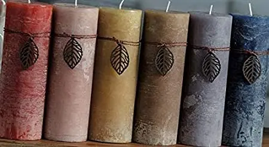
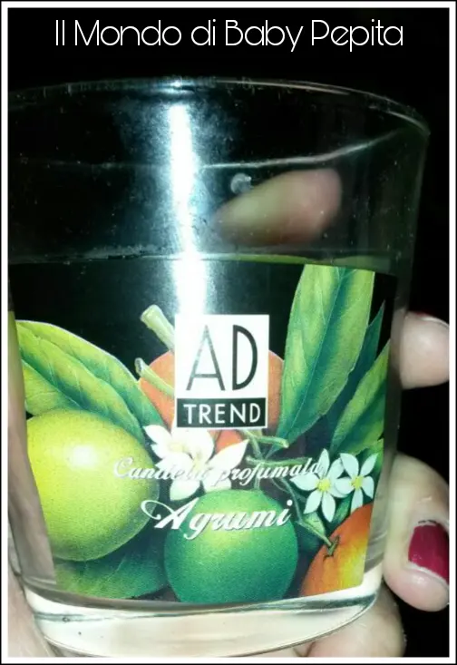
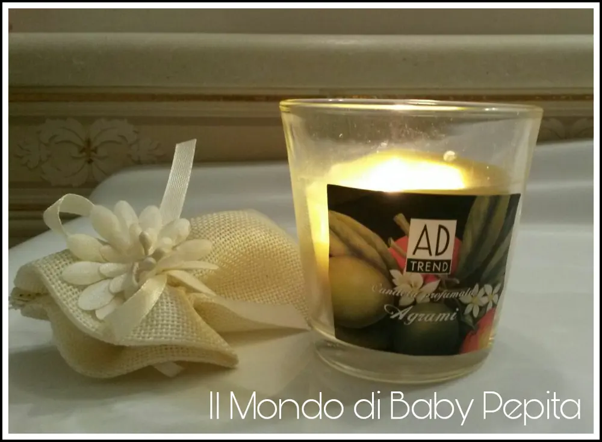
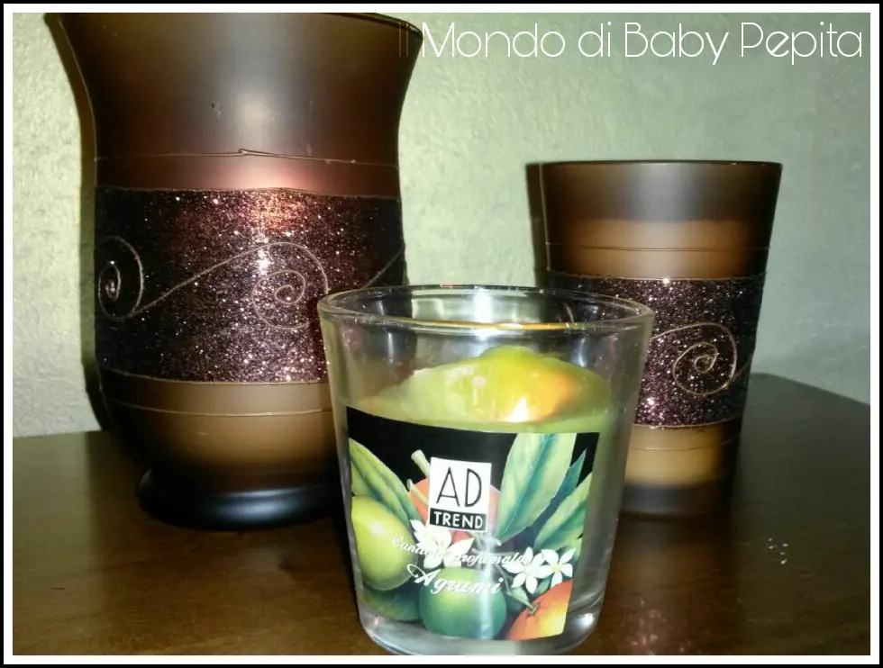
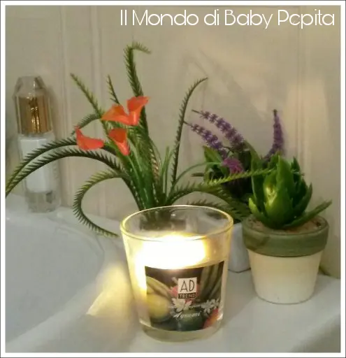

AD TREND - candele profumate - BOCCIATA


L'azienda in questione che trattiamo oggi è AD TREND, azienda di candele.
Questa volta non è nessuna collaborazione o sconto, ma parliamo di candele profumate che mi hanno segnalato. Candele profumate si fa per dire!
Infatti, quante volte vi è capitato di essere insoddisfatti degli articoli che comprate?Magari li comprate per provare, inconsapevoli che poi si rivelano un flop.
Candela all'aroma di agrumi che tutto fa tranne che emanare un profumo che sa di agrumi.
Il vasetto a bicchiere è riutilizzabile, l'unica nota positiva.
Per il resto non è una candela affatto profumata, anzi lascia anche una scia nera carbone.

In pratica è nel vero senso della parola TUTTO FUMO.

Quindi mi dispiace ma devo bocciare questo prodotto!
Vi consiglio di acquistare, allo stesso prezzo, candele di altri marchi.
Prezzo: 1,99 €
(Non posto il sito in quanto su internet non ci sono fonti se non su Amazon o negozi fisici).

" Noi siamo come la fiamma di una candela: la cera si consuma, la luce si fa fioca, ma se crediamo in noi stessi non resteremo mai al buio".
(Romano Battaglia)
Potremmo però, approfittare per riflettere con il chiarore di questa candela non profumata, almeno non saremo inebriati dal suo profumo, a riflettere sull'importanza della vita. E pensare che in fondo, sì, siamo come questa fiammella accesa, basta un alito di vento per spazzarci via!